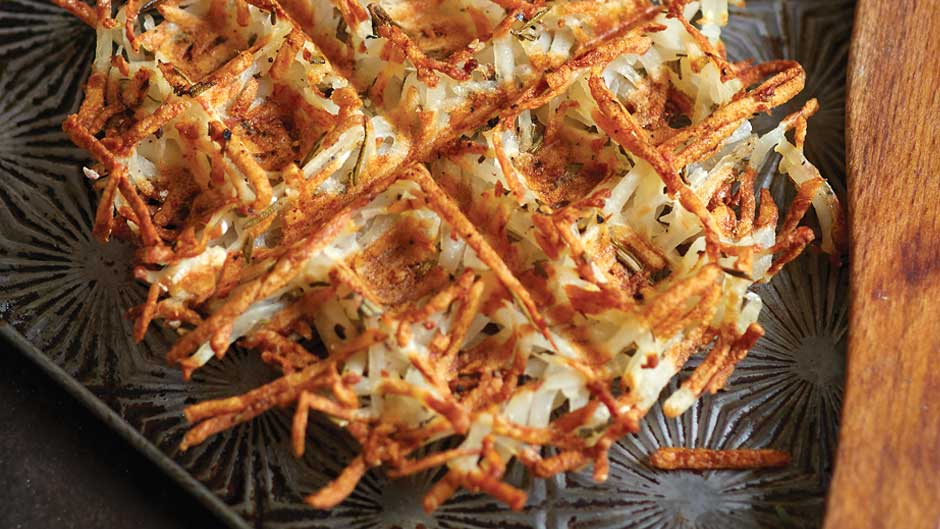

Arrays and Hashes
March 7, 2016
Intro
Mmmm, who doesn't love a nice plate of hashed brown potatoes? Whenever I think of hashes, this is what I think of. While a Hash in Ruby is a bit drier, it still has delicious capabilities in letting us store and manage our data. Hashes, and their simpler (but not stupid) cousins Arrays, are the most common ways of representing collections of objects in Ruby.
Arrays
Arrays are an ordered collection of integer-indexed elements. The index of the first element is always zero (0). This might sound like a lot of gobbledy-gook, so let's think of an array as a set of boxes all lined up in one line next to each other. The box at the very left end is Box 0, the next is Box 1, and so on, until the last box. In these boxes you can put any kind of Ruby object you want: you can put a string, or an integer, or a character, or any kind of more complicated object. Suppose you want whatever's in Box 5, then you say
thingIWant = Box[5]
thingIWant is now whatever was in Box 5.
Hashes
Hashes are an unordered collection of key-value pairs. Again with the gobbledy-gook! Hashes expand on the idea of Arrays. Suppose you take the boxes from our Array example above and instead of them being in a nice line numbered 0, 1, 2, etc, you give them each a name. This name is called the 'key'. Let's say the keys are names of U.S. states. Then you mix the boxes up all over the table. You can no longer refer to them by number since they have no order, you refer to them instead by name e.g. Box["New Jersey"].
Hashes are often called 'dictionaries' because they can be useful for looking things up. In our example of the boxes have the names of states as their keys, let's say each box contains the name of that state's capital. If you want to know the capital of Maine, you say:
capitalIWant = Box["Maine"]
As with Arrays, you can put anything you want in the Hash boxes. The boxes don't even need to all contain the same type of thing. Let's say the boxes represent FavoriteThings, and each box's key (name) is the name of a Von Trapp Family Singer. FavoriteThing["Liesl"] may contain a boy, while FavoriteThing["Friedrich"] may contain blueberries. What if you don't know what Maria's favorite thing is? You can retrieve it:
mariasFavoriteThing = FavoriteThings["Maria"]
Some people like to point out that Hash keys must be unique, while values don't have to be. In our example, Friedrich can only have one FavoriteThing, but blueberries might be Greta's FavoriteThing as well. However, this is obviously true for Arrays as well: there is only one Box[10], but the value Box[10] contains might be the same value contained by Box[22].
Contrast and Compare
To summarize, Arrays hold a list of items that are ordered because they are referenced with 0, 1, 2, etc. The ordering may or may not reflect some inherent ordering; regardless, that is how they must be accessed, by their number in the order. A Hash is a collection of objects which are unordered and which are accessed by a name (called they 'key'). Arrays are good for storing and manipulating collections of items which have some kind of order to them, or which don't have a corresponding set of keys that you'll want to be accessing them through. Arrays are more of a default choice for collections because they are usually quicker and take up less space. Hashes are good for collections which have a natural key-value pairing associated with them, and/or for which you'll constantly wanting to 'look-up' a type of value using another particular type of value.
<< Previous Post | Home | Next Post >>